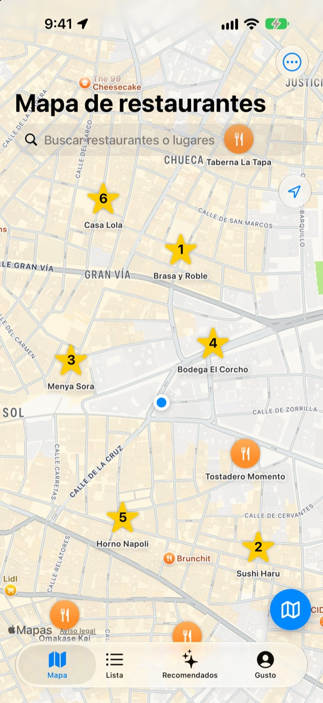
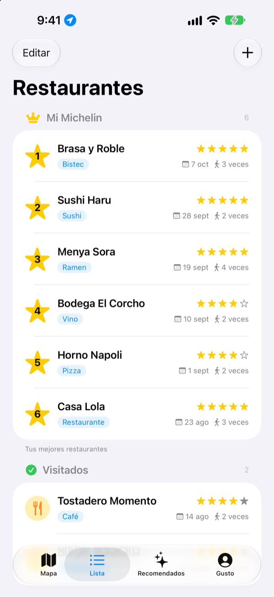
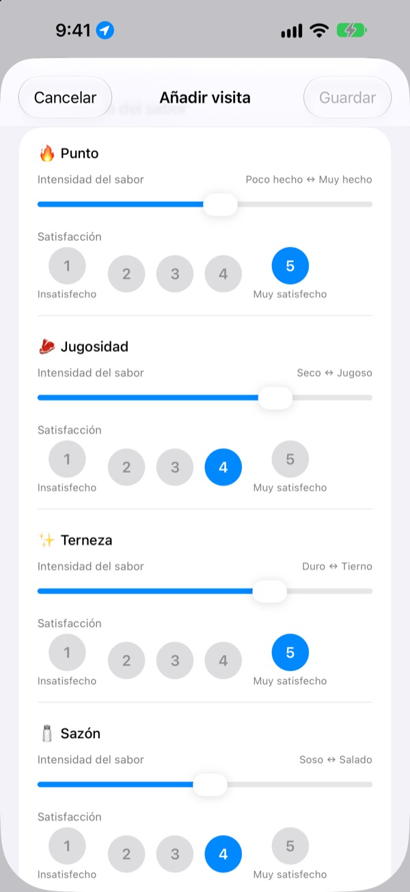
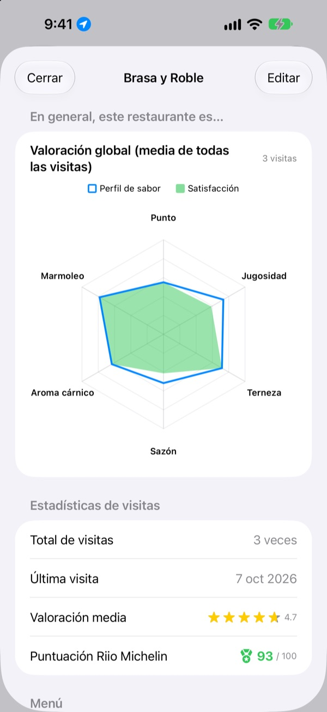

Ese sitio donde comiste tan bien,
ya no se te olvida
Marca en el mapa los restaurantes donde has estado y los que quieres probar, y en cada visita anota qué pediste, las fotos y cómo sabía. Cuando no sepas dónde comer, tus notas tendrán la respuesta.
Todas las funciones son gratis. Sin registro: tus notas se quedan en tu iPhone.

Valora un plato
Elige un tipo de comida y marca la intensidad de cada sabor y cuánto te gustó. Los mismos criterios y el mismo cálculo que una visita en la app.
Ese sitio estaba buenísimo, pero ¿qué pedí?
Recuerdas que el restaurante te encantó, pero el nombre se te escapa, y lo que pediste o si el caldo estaba salado ya ni lo sabes. Así que vuelves a buscar y a leer reseñas de desconocidos. Insaeng guarda en un mapa lo que tú has probado, para que elijas el próximo sitio con tu propia experiencia.
Visitados, Quiero ir y tu propio Michelin
Busca en el mapa o toca un lugar cercano y se guarda al momento. Separa los sitios donde ya has estado de los que quieres probar, y ordena tus seis favoritos del 1 al 6.
Cuando alguien te pida una recomendación, enséñale la lista.

Preguntas a la medida de cada plato
La intensidad de cada sabor, como el picante o la sal, se marca con un control deslizante, y cuánto te gustó se valora aparte del 1 al 5. Para un filete importan el punto y la jugosidad; para el sushi, el arroz y el pescado; para el ramen, el caldo y los fideos.
Cada visita guarda también el plato, las fotos, las estrellas y tus notas.

Los sitios a los que volver, en números
Con varias visitas, cada restaurante muestra una valoración global con la media de todas ellas y una puntuación Riio Michelin sobre 100 que combina estrellas y satisfacción.
Al salir de un restaurante guardado, poco después te llega un aviso para anotar la visita.

Empieza en tres pasos
- 1
Guarda un restaurante
Búscalo en el mapa o toca un lugar cercano para añadirlo.
- 2
Anota tu visita
Plato, fotos, estrellas y valoración del sabor, que es opcional.
- 3
Elige el próximo
Mira tu top 6 y las puntuaciones, y ve con Apple Maps, Kakao Map o Naver Map.
Qué se valora según el plato
- 🍽️ General
- Picante, Intensidad, Dulzor, Salado, Untuosidad, Sabor natural
- 🥩 Bistec
- Punto, Jugosidad, Terneza, Sazón, Aroma cárnico, Marmoleo
- 🍣 Sushi
- Shari (arroz), Neta (pescado), Wasabi, Equilibrio, Prensado, Temperatura
- 🍜 Ramen
- Caldo, Fideos, Chashu, Ingredientes, Temperatura, Equilibrio
- 🍕 Pizza
- Masa, Salsa, Queso, Punto, Ingredientes, Equilibrio
- 🍷 Vino
- Cuerpo, Taninos, Acidez, Aroma, Final, Equilibrio
- ☕ Café
- Acidez, Cuerpo, Sabor, Regusto, Dulzor, Equilibrio
El resto de comidas se valoran con los criterios generales de la primera fila. También puedes crear tus propias categorías.
Preguntas frecuentes
¿Cómo añado un restaurante?
Escribe el nombre del restaurante en la barra de búsqueda de la parte superior del mapa y, en los resultados, toca «Añadir a mis restaurantes». También puedes tocar un sitio cercano que aparezca en el mapa para añadirlo directamente. Si un sitio no sale en la búsqueda, añádelo tú mismo en tu ubicación actual o en el punto que elijas del mapa.
¿Qué son Visitados, Quiero ir y Top 6?
Visitados : restaurantes donde ya has estado. Puedes registrar tus visitas. Quiero ir : restaurantes que te gustaría probar algún día. Cuando hayas ido, cámbialo a Visitados desde la pantalla de detalles del restaurante. Top 6 (Mi Michelin) : ordena del 1.º al 6.º tus seis restaurantes favoritos. Un restaurante marcado como «Quiero ir» no puede entrar en el Top 6.
¿Tengo que valorar el sabor obligatoriamente?
No, es opcional. Si valoras, la intensidad del sabor y la satisfacción se suman a la valoración global del restaurante y cuentan para su puntuación Riio Michelin.
¿Cuándo llega el aviso de «¿Qué tal la visita de hoy?»?
Si pasas más de 5 minutos cerca de un restaurante guardado y luego te vas, el aviso llega unos 40 minutos después. Para esta función hace falta permitir el acceso a la ubicación «Siempre» y las notificaciones. Si no quieres recibir estos avisos, ve a Ajustes > Apps > Insaeng y desactiva las notificaciones, o cambia la ubicación a «Cuando se use la app». La ubicación solo se comprueba en tu dispositivo. Tus desplazamientos no se guardan ni se envían a ningún sitio.
¿Puedo usar la app sin dar acceso a la ubicación?
Sí. Puedes elegir tú mismo un punto en el mapa para añadir restaurantes y registrar visitas. Lo único que no tendrás es tu ubicación actual en el mapa y los avisos después de la visita.
La búsqueda de sitios no da resultados
Para buscar sitios hace falta conexión a internet. Prueba otra vez con otro nombre o con una palabra clave más corta. Si aun así no aparece, puedes elegir un punto en el mapa y añadirlo tú mismo.
¿Dónde se guardan mis registros? ¿Se sincronizan con otros dispositivos?
Los restaurantes, las visitas y las fotos se guardan solo en este iPhone. La versión actual no se sincroniza con otros dispositivos, y la copia de seguridad y restauración de iCloud que aparece en Ajustes todavía no funciona. Eso sí, la copia de seguridad completa del iPhone (copia en iCloud o en el ordenador) incluye los datos de la app.
Quiero borrarlo todo
Abre los ajustes desde la pantalla del mapa y toca «Eliminar todos los datos» para borrar los restaurantes y las visitas. No se puede deshacer, así que ten cuidado. Para borrar también las fotos por completo, elimina la app.
Si elimino la app y la vuelvo a instalar, ¿siguen ahí mis registros?
No. Como los registros se guardan solo en el dispositivo, se borran junto con la app. Tenlo muy en cuenta antes de eliminarla.
¿De verdad es todo gratis?
Sí. Todas las funciones son gratis, sin anuncios y sin cuenta. «Apoya al desarrollador» en Ajustes es totalmente opcional y no desbloquea nada.
Si tu duda no está resuelta aquí, envíanosla directamente desde Ajustes > Soporte en la app o escríbenos a mizzking75@gmail.com. Si nos indicas la versión de la app, el modelo de iPhone y en qué pantalla estabas y qué hiciste, podremos revisarlo más rápido.